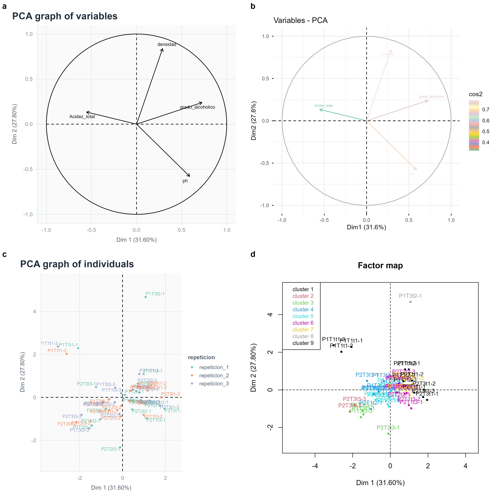
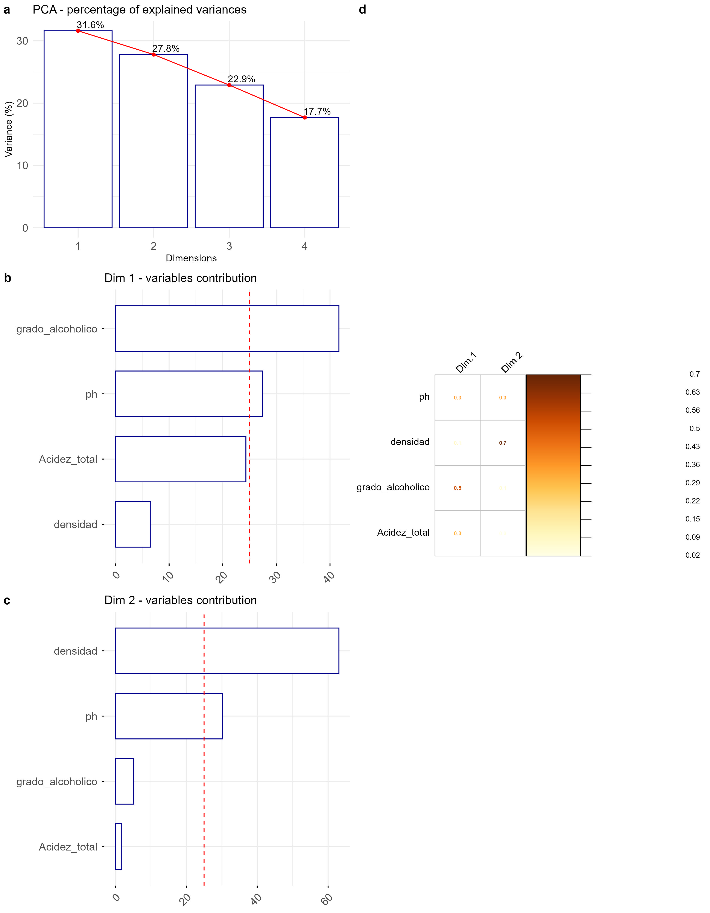

source('https://inkaverse.com/setup.r')Examen: Análisis e Interpretación de Componentes Principales
Information
Análisis e Interpretación de Componentes Principales
Database
https://docs.google.com/spreadsheets/d/18WwIUI7j20AS3QWs4a_3ifUdJRzuBK4dzaUmMeiugdw/edit?usp=sharing
Project Setup
Data import
gs <- "https://docs.google.com/spreadsheets/d/18WwIUI7j20AS3QWs4a_3ifUdJRzuBK4dzaUmMeiugdw/edit?usp=sharing" %>%
as_sheets_id()
fb <- gs %>%
range_read(ss = .,sheet = "fb") %>%
mutate(across(c(tratamiento:repeticion), ~ as.factor(.)))
fb %>% str()Multivariate
library(factoextra)
dtx <- fb %>%
dplyr::select(c(1, 2, 3, 4, 5, 6, 7)) %>%
group_by(tratamiento, repeticion) %>%
summarise(across(where(is.numeric), ~ mean(.x, na.rm = TRUE))) %>%
unite("rowname", c("tratamiento", "repeticion"), remove = F, sep = "-") %>%
column_to_rownames() %>%
as.data.frame()
str(dtx)
mv <- dtx %>%
PCA(scale.unit = T
, graph = F
, quali.sup = c(1, 2, 3))
var <- mv %>%
plot.PCA(choix = c("var"), cex=0.7)
var
cos <- mv %>%
fviz_pca_var(col.var = "cos2"
, gradient.cols = inti:::paleta()
, repel = TRUE
, labelsize = 2)
cos
ind <- mv %>%
plot.PCA(choix = c("ind")
, cex = 0.7
, label = "ind"
, invisible = "quali"
, col.hab = inti:::paleta()
, habillage = 2
)
ind
pcainfo <- factoextra::get_pca(mv); pcainfo
pcainfo$cor %>% kable(caption = "Variable correlations")
pcainfo$contrib %>% kable(caption = "Variable Contribution")
pcainfo$cos2 %>% kable(caption = "Variable Cos2")
cls <- mv %>% HCPC(nb.clust = -1, graph = FALSE)
map <- \() {plot.HCPC(cls, choice = "map", draw.tree = FALSE)}
cls$call$t$tree
cls$data.clust %>%
kable(caption = "Cluster membership of each individual")
cls$desc.var$quanti %>%
kable(caption = "Quantitative variables characterizing each cluster")
cls$desc.var$category%>%
kable(caption = "Categorical variables significantly by cluster")
table(cls$data.clust$clust) %>%
kable(caption = "Number of individuals assigned to each cluster")
plot <- list(var, cos, ind, map) %>%
plot_grid(plotlist = ., ncol = 2, labels = "auto") %>%
ggsave(plot = ., "manuscript/multivariate.jpg", units = "cm"
, width = 30, height = 30)
plot %>% include_graphics()
PCA information
library(corrplot)
c1 <- fviz_eig(mv,
addlabels = TRUE,
hjust = 0.05,
barfill="white",
barcolor ="darkblue",
linecolor ="red") +
# ylim(0, 30) +
labs(
title = "PCA - percentage of explained variances",
y = "Variance (%)") +
theme_minimal() +
theme(
axis.text.x = element_text(size = 12)
, axis.text.y = element_text(size = 12)
)
c1
c2 <- fviz_contrib(mv,
choice = "var",
axes = 1,
top = 30,
fill="white",
color ="darkblue"
, sort.val = "asc"
) +
# ylim(0, 8) +
labs(title = "Dim 1 - variables contribution", x = "") +
coord_flip() +
theme(
axis.text.x = element_text(size = 12)
, axis.text.y = element_text(size = 12)
)
c2
c3 <- fviz_contrib(mv,
choice = "var",
axes = 2,
top = 30,
fill="white",
color ="darkblue"
, sort.val = "asc"
) +
# ylim(0, 8) +
labs(title = "Dim 2 - variables contribution", x = "") +
coord_flip() +
theme(
axis.text.x = element_text(size = 12)
, axis.text.y = element_text(size = 12)
)
c3
lpanel <- c(c1, c2, c3) %>%
plot_grid(plotlist = ., ncol = 1, labels = "auto"
, rel_heights = c(1, 1.2, 1.2))
rpanel <- \() {
pcainfo$cos2[, 1:2] %>%
corrplot(
is.corr = F
, method = "number",
type = "full",
tl.col = "black",
tl.srt = 45,
tl.cex = 0.9,
number.cex = 0.5,
number.digits = 1,
cl.cex = 0.7,
cl.pos = "r",
cl.align = "r",
cl.ratio = 4
)
}
grid <- c(lpanel, rpanel) %>%
plot_grid(plotlist = ., ncol = 2, labels = c("", "d"))
plot <- grid %>%
ggsave(plot = ., "manuscript/contribution.jpg"
, units = "cm"
, width = 28, height = 36)
plot %>% include_graphics()